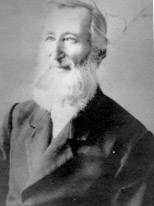

 Adam Wise Kersh was born on November 16, 1828, in Wise Hollow, near Centerville, Augusta County, VA. He served as a Private in Company F of the 52nd Virginia Infantry from July of 1861 until May of 1865. Before the war, Adam had become a member of St. Michael Church, and made his living as a cabinet and furniture maker. His woodworking shop was located on a farm in Augusta County, where he lived with his brother George.
Adam enlisted at Staunton, VA on July 31, 1861 at the age of 33. Throughout his early career in military service Adam tried repeatedly to find a paid substitute but failed to do so. Adam served with the 52nd Virginia from the time of his enlistment until July 11, 1864, and again from December 31, 1864 until May 11, 1865. Kersh was wounded in action at the fight near Bethesda Chapple on May 30, 1864. In his time away from service Adam returned to home and was listed as AWOL from his regiment. He lived at home for several months, hiding in his attic whenever someone approached. He returned to his Company and to service apparently without punishment, and was eventually paroled at Staunton, the place of his enlistment, after the ceasing of hostilities.
Adam lived the remainder of his life in Augusta County until his death on March 22, 1905. The 25 letters in this collection were written mainly to his brother George, living on their farm in Mt. Crawford, VA. The letters begin on September 15, 1861 and run throughout the war, the last letter being dated February 7th, 1865. Throughout his letters, Kersh portrays himself as a dutiful soldier (except for his AWOL experience), complaining very little and expressing no political or ideological views on the progress of the war. Wise wrote down what he saw and heard throughout his war experience, but cast a knowing doubt on the rumors he heard in camp. His letters offer a matter of fact glance at many important issues that permeated the soldier's Civil War.
Collected Letters of Adam Kersh:
1861
Adam
Kersh to Susannah Kersh (mother), September 15, 1861
Adam
Kersh to George Kersh, September 23, 1861
Adam
Kersh to George Kersh, October 20, 1861
Adam
Kersh to George Kersh, December 16, 1861
Adam
Kersh to George Kersh, December 25, 1861
1862
Adam
Kersh to George Kersh, January 4, 1862
George
Kersh to Adam Kersh, January 25, 1862
Adam
Kersh to George Kersh, January 29, 1862
Adam
Kersh to George Kersh, February 4,
1862
Adam
Kersh to George Kersh, March 1, 1862
Adam
Kersh to George Kersh, April 10, 1862
Adam
Kersh to George Kersh, October 14, 1862
Adam
Kersh to George Kersh, November 22, 1862
1863
Adam
Kersh to George Kersh, January 1,
1863
Adam
Kersh to George Kersh, March 8,
1863
Adam
Kersh to George Kersh, May 8,
1863
Adam
Kersh to George Kersh, May 15,
1863
Adam
Kersh to George Kersh, May 24, 1863
Adam
Kersh to Josephine Kersh (niece), September 29, 1863
Silas
Jones to George Kersh, December 19, 1863
1864
Adam
Kersh to George Kersh, March 12,
1864
Adam
Kersh to George Kersh, April 3,
1864
Adam
Kersh to George Kersh, May 12, 1864
R.F.
Misner to George Kersh, September 4, 1864
1865
Adam
Kersh to George Kersh, February 7, 1865